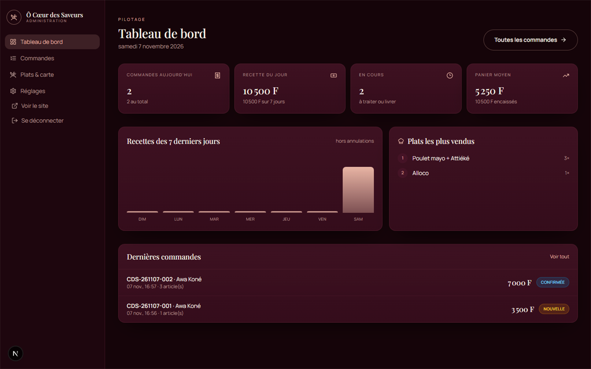
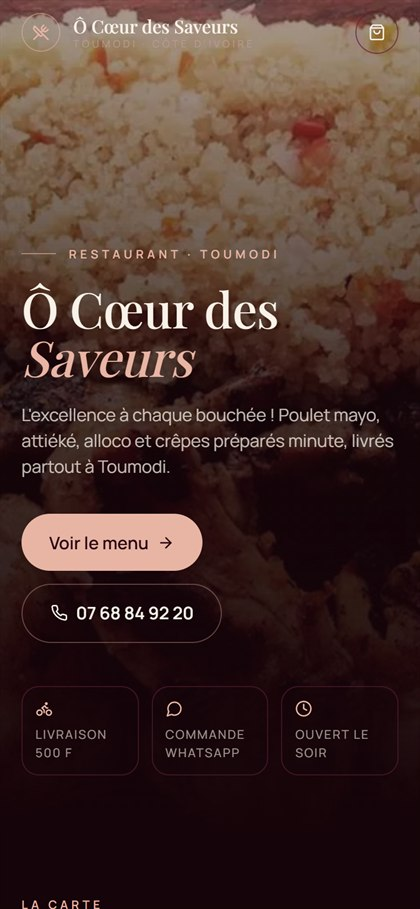

Projet à la une
Vexora Resto
Plateforme multi-restaurants pour Toumodi : une place de marché qui référence les adresses, une page publique par restaurant avec commande envoyée sur WhatsApp, et un espace restaurateur pour piloter carte, commandes et ventes.
- Trois espaces distincts : client, restaurateur, console plateforme
- Commande transmise directement sur le WhatsApp du restaurant
- Offres et abonnements Mobile Money, e-mails transactionnels, Docker
Code privé — démonstration sur demande. Écrire un message